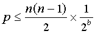
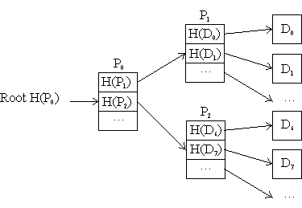
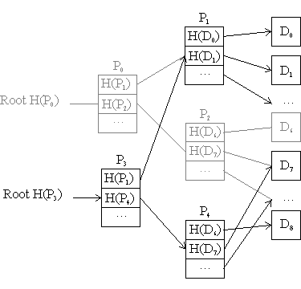
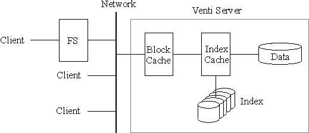
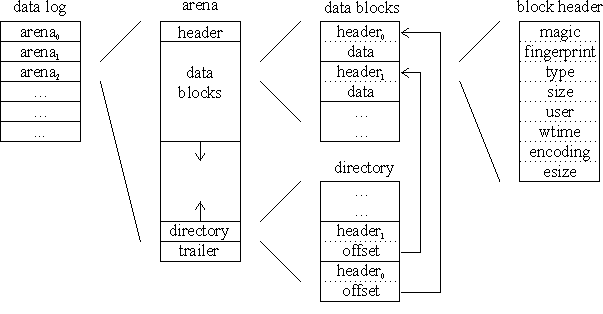
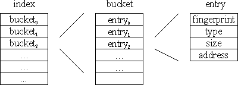
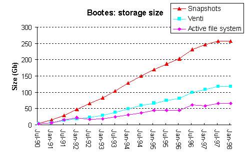
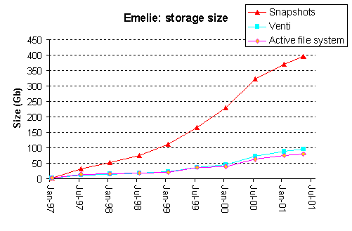
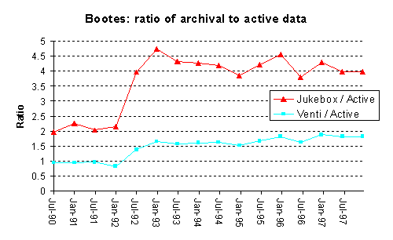
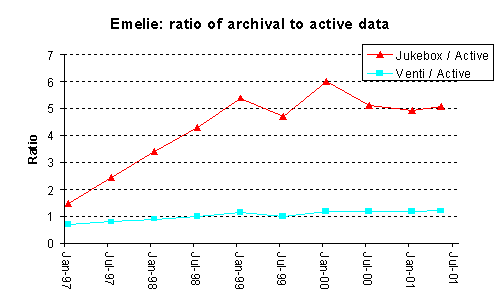

Sean Quinlan and Sean Dorward
Bell Labs, Lucent Technologies
This paper describes a network storage system, called Venti, intended for archival data. In this system, a unique hash of a block's contents acts as the block identifier for read and write operations. This approach enforces a write-once policy, preventing accidental or malicious destruction of data. In addition, duplicate copies of a block can be coalesced, reducing the consumption of storage and simplifying the implementation of clients. Venti is a building block for constructing a variety of storage applications such as logical backup, physical backup, and snapshot file systems.
We have built a prototype of the system and present some preliminary performance results. The system uses magnetic disks as the storage technology, resulting in an access time for archival data that is comparable to non-archival data. The feasibility of the write-once model for storage is demonstrated using data from over a decade's use of two Plan 9 file systems.
Archival storage is a second class citizen. Many computer environments provide access to a few recent versions of the information stored in file systems and databases, though this access can be tedious and may require the assistance of a system administrator. Less common is the ability for a user to examine data from last month or last year or last decade. Such a feature may not be needed frequently, but when it is needed it is often crucial.
The growth in capacity of storage technologies exceeds the ability of many users to generate data, making it practical to archive data in perpetuity. Plan 9, the computing environment that the authors use, includes a file system that stores archival data to an optical jukebox [16, 17]. Ken Thompson observed that, for our usage patterns, the capacity of the jukebox could be considered infinite. In the time it took for us to fill the jukebox, the improvement in technology would allow us to upgrade to a new jukebox with twice the capacity.
Abundant storage suggests that an archival system impose a write-once policy. Such a policy prohibits either a user or administrator from deleting or modifying data once it is stored. This approach greatly reduces the opportunities for accidental or malicious data loss and simplifies the system's implementation.
Moreover, our experience with Plan 9 is that a write-once policy changes the way one views storage. Obviously, some data is temporary, derivative, or so large that it is either undesirable or impractical to retain forever and should not be archived. However, once it is decided that the data is worth keeping, the resources needed to store the data have been consumed and cannot be reclaimed. This eliminates the task of periodically "cleaning up" and deciding whether the data is still worth keeping. More thought is required before storing the data to a write-once archive, but as the cost of storage continues to fall, this becomes an easy decision.
This paper describes the design and implementation of an archival server, called Venti. The goal of Venti is to provide a write-once archival repository that can be shared by multiple client machines and applications. In addition, by using magnetic disks as the primary storage technology, the performance of the system approaches that of non-archival storage.
A prevalent form of archival storage is the regular backup of data to magnetic tape [15]. A typical scenario is to provide backup as a central service for a number of client machines. Client software interfaces with a database or file system and determines what data to back up. The data is copied from the client to the tape device, often over a network, and a record of what was copied is stored in a catalog database.
Restoring data from a tape backup system can be tedious and error prone. The backup system violates the access permission of the file system, requiring a system administrator or privileged software to perform the task. Since they are tedious, restore operations are infrequent and problems with the process may go undetected. Potential sources of error abound: tapes are mislabeled or reused or lost, drives wander out of alignment and cannot read their old tapes, technology becomes obsolete.
For tape backup systems, a tradeoff exists between the performance of backup and restore operations [1]. A full backup simplifies the process of restoring data since all the data is copied to a continuous region on the tape media. For large file systems and databases, incremental backups are more efficient to generate, but such backups are not self-contained; the data for a restore operation is scattered across multiple incremental backups and perhaps multiple tapes. The conventional solution is to limit the extent of this scattering by performing a full backup followed by a small number of incremental backups.
File systems such as Plan 9 [16, 17], WAFL [5], and AFS [7] provide a more unified approach to the backup problem by implementing a snapshot feature. A snapshot is a consistent read-only view of the file system at some point in the past. The snapshot retains the file system permissions and can be accessed with standard tools (ls, cat, cp, grep, diff) without special privileges or assistance from an administrator. In our experience, snapshots are a relied-upon and frequently-used resource because they are always available and easy to access.
Snapshots avoid the tradeoff between full and incremental backups. Each snapshot is a complete file system tree, much like a full backup. The implementation, however, resembles an incremental backup because the snapshots and the active file system share any blocks that remain unmodified; a snapshot only requires additional storage for the blocks that have changed. To achieve reasonable performance, the device that stores the snapshots must efficiently support random access, limiting the suitability of tape storage for this approach.
In the WAFL and AFS systems, snapshots are ephemeral; only a small number of recent versions of the file system are retained. This policy is reasonable since the most recent versions of files are the most useful. For these systems, archival storage requires an additional mechanism such as tape backup.
The philosophy of the Plan 9 file system is that random access storage is sufficiently cheap that it is feasible to retain snapshots permanently. The storage required to retain all daily snapshots of a file system is surprisingly modest; later in the paper we present statistics for two file servers that have been in use over the last 10 years.
Like Plan 9, the Elephant file system [18] retains many versions of data. This system allows a variety of storage reclamation policies that determine when a version of a file should be deleted. In particular, "landmark" versions of files are retained permanently and provide an archival record.
Venti is a block-level network storage system intended for archival data. The interface to the system is a simple protocol that enables client applications to read and write variable sized blocks of data. Venti itself does not provide the services of a file or backup system, but rather the backend archival storage for these types of applications.
Venti identifies data blocks by a hash of their contents. By using a collision-resistant hash function with a sufficiently large output, it is possible to consider the hash of a data block as unique. Such a unique hash is called the fingerprint of a block and can be used as the address for read and write operations. This approach results in a storage system with a number of interesting properties.
As blocks are addressed by the fingerprint of their contents, a block cannot be modified without changing its address; the behavior is intrinsically write-once. This property distinguishes Venti from most other storage systems, in which the address of a block and its contents are independent.
Moreover, writes are idempotent. Multiple writes of the same data can be coalesced and do not require additional storage space. This property can greatly increase the effective storage capacity of the server since it does not rely on the behavior of client applications. For example, an incremental backup application may not be able to determine exactly which blocks have changed, resulting in unnecessary duplication of data. On Venti, such duplicate blocks will be discarded and only one copy of the data will be retained. In fact, replacing the incremental backup with a full backup will consume the same amount of storage. Even duplicate data from different applications and machines can be eliminated if the clients write the data using the same block size and alignment.
The hash function can be viewed as generating a universal name space for data blocks. Without cooperating or coordinating, multiple clients can share this name space and share a Venti server. Moreover, the block level interface places few restrictions on the structures and format that clients use to store their data. In contrast, traditional backup and archival systems require more centralized control. For example, backup systems include some form of job scheduler to serialize access to tape devices and may only support a small number of predetermined data formats so that the catalog system can extract pertinent meta-data.
Venti provides inherent integrity checking of data. When a block is retrieved, both the client and the server can compute the fingerprint of the data and compare it to the requested fingerprint. This operation allows the client to avoid errors from undetected data corruption and enables the server to identify when error recovery is necessary.
Using the fingerprint of a block as its identity facilitates features such as replication, caching, and load balancing. Since the contents of a particular block are immutable, the problem of data coherency is greatly reduced; a cache or a mirror cannot contain a stale or out of date version of a block.
The design of Venti requires a hash function that generates a unique fingerprint for every data block that a client may want to store. Obviously, if the size of the fingerprint is smaller than the size of the data blocks, such a hash function cannot exist since there are fewer possible fingerprints than blocks. If the fingerprint is large enough and randomly distributed, this problem does not arise in practice. For a server of a given capacity, the likelihood that two different blocks will have the same hash value, also known as a collision, can be determined. If the probability of a collision is vanishingly small, we can be confident that each fingerprint is unique.
It is desirable that Venti employ a cryptographic hash function. For such a function, it is computationally infeasible to find two distinct inputs that hash to the same value [10]. This property is important because it prevents a malicious client from intentionally creating blocks that violate the assumption that each block has a unique fingerprint. As an additional benefit, using a cryptographic hash function strengthens a client's integrity check, preventing a malicious server from fulfilling a read request with fraudulent data. If the fingerprint of the returned block matches the requested fingerprint, the client can be confident the server returned the original data.
Venti uses the Sha1 hash function [13] developed by the US National Institute for Standards and Technology (NIST). Sha1 is a popular hash algorithm for many security systems and, to date, there are no known collisions. The output of Sha1 is a 160 bit (20 byte) hash value. Software implementations of Sha1 are relatively efficient; for example, a 700Mhz Pentium 3 can compute the Sha1 hash of 8 Kbyte data blocks in about 130 microseconds, a rate of 60 Mbytes per second.
Are the 160 bit hash values generated by Sha1 large enough to ensure the fingerprint of every block is unique? Assuming random hash values with a uniform distribution, a collection of n different data blocks and a hash function that generates b bits, the probability p that there will be one or more collisions is bounded by the number of pairs of blocks multiplied by the probability that a given pair will collide, i.e.

Today, a large storage system may contain a petabyte (10^15 bytes) of data. Consider an even larger system that contains an exabyte (10^18 bytes) stored as 8 Kbyte blocks (~10^14 blocks). Using the Sha1 hash function, the probability of a collision is less than 10^-20. Such a scenario seems sufficiently unlikely that we ignore it and use the Sha1 hash as a unique identifier for a block. Obviously, as storage technology advances, it may become feasible to store much more than an exabyte, at which point it maybe necessary to move to a larger hash function. NIST has already proposed variants of Sha1 that produce 256, 384, and 512 bit results [14]. For the immediate future, however, Sha1 is a suitable choice for generating the fingerprint of a block.
When the Plan 9 file system was designed in 1989, optical jukeboxes offered high capacity with respectable random access performance and thus were an obvious candidate for archival storage. The last decade, however, has seen the capacity of magnetic disks increase at a far faster rate than optical technologies [20]. Today, a disk array costs less than the equivalent capacity optical jukebox and occupies less physical space. Disk technology is even approaching tape in cost per bit.
Magnetic disk storage is not as stable or permanent as optical media. Reliability can be improved with technology such as RAID, but unlike write-once optical disks, there is little protection from erasure due to failures of the storage server or RAID array firmware. This issue is discussed in Section 7.
Using magnetic disks for Venti has the benefit of reducing the disparity in performance between conventional and archival storage. Operations that previously required data to be restored to magnetic disk can be accomplished directly from the archive. Similarly, the archive can contain the primary copy of often-accessed read-only data. In effect, archival data need not be further down the storage hierarchy; it is differentiated by the write-once policy of the server.
Venti is a building block on which to construct a variety of storage applications. Venti provides a large repository for data that can be shared by many clients, much as tape libraries are currently the foundation of many centralized backup systems. Applications need to accommodate the unique properties of Venti, which are different from traditional block level storage devices, but these properties enable a number of interesting features.
Applications use the block level service provided by Venti to store more complex data structures. Data is divided into blocks and written to the server. To enable this data to be retrieved, the application must record the fingerprints of these blocks. One approach is to pack the fingerprints into additional blocks, called pointer blocks, that are also written to the server, a process that can be repeated recursively until a single fingerprint is obtained. This fingerprint represents the root of a tree of blocks and corresponds to a hierarchical hash of the original data.
A simple data structure for storing a linear sequence of data blocks is shown in Figure 1. The data blocks are located via a fixed depth tree of pointer blocks which itself is addressed by a root fingerprint. Applications can use such a structure to store a single file or to mimic the behavior of a physical device such as a tape or a disk drive. The write-once nature of Venti does not allow such a tree to be modified, but new versions of the tree can be generated efficiently by storing the new or modified data blocks and reusing the unchanged sections of the tree as depicted in Figure 2.

Figure 1. A tree structure for storing a linear sequence of blocks

Figure 2. Build a new version of the tree.
By mixing data and fingerprints in a block, more complex data structures can be constructed. For example, a structure for storing a file system may include three types of blocks: directory, pointer, and data. A directory block combines the meta information for a file and the fingerprint to a tree of data blocks containing the file's contents. The depth of the tree can be determined from the size of the file, assuming the pointer and data blocks have a fixed size. Other structures are obviously possible. Venti's block-level interface leaves the choice of format to client applications and different data structures can coexist on a single server.
The following sections describes three applications that use Venti as an archival data repository: a user level archive utility called vac, a proposal for a physical level backup utility, and our preliminary work on a new version of the Plan 9 file system.
Vac is an application for storing a collection of files and directories as a single object, similar in functionality to the utilities tar and zip. With vac, the contents of the selected files are stored as a tree of blocks on a Venti server. The root fingerprint for this tree is written to a vac archive file specified by the user, which consists of an ASCII representation of the 20 byte root fingerprint plus a fixed header string, and is always 45 bytes long. A corresponding program, called unvac, enables the user to restore files from a vac archive. Naturally, unvac requires access to the Venti server that contains the actual data, but in most situations this is transparent. For a user, it appears that vac compresses any amount of data down to 45 bytes.
An important attribute of vac is that it writes each file as a separate collection of Venti blocks, thus ensuring that duplicate copies of a file will be coalesced on the server. If multiple users vac the same data, only one copy will be stored on the server. Similarly, a user may repeatedly vac a directory over time and even if the contents of the directory change, the additional storage consumed on the server will be related to the extent of the changes rather than the total size of the contents. Since Venti coalesces data at the block level, even files that change may share many blocks with previous versions and thus require little space on the server; log and database files are good examples of this scenario.
On many Unix systems, the dump utility is used to back up file systems. Dump has the ability to perform incremental backups of data; a user specifies a dump level, and only files that are new or have changed since the last dump at this level are written to the archive. To implement incremental backups, dump examines the modified time associated with each file, which is an efficient method of filtering out the unchanged files.
Vac also implements an incremental option based on the file modification times. The user specifies an existing vac file and this archive is used to reduce the number of blocks written to the Venti server. For each file, vac examines the modified time in both the file system and the vac archive. If they are the same, vac copies the fingerprint for the file from the old archive into the new archive. Copying just the 20-byte fingerprint enables the new archive to include the entire file without reading the data from the file system nor writing the data across the network to the Venti server. In addition, unlike an incremental dump, the resulting archive will be identical to an archive generated without the incremental option; it is only a performance improvement. This means there is no need to have multiple levels of backups, some incremental, some full, and so restore operations are greatly simplified.
A variant of the incremental option improves the backup of files without reference to modification times. As vac reads a file, it computes the fingerprint for each block. Concurrently, the pointer blocks of the old archive are examined to determine the fingerprint for the block at the same offset in the old version of the file. If the fingerprints are the same, the block does not need to be written to Venti. Instead, the fingerprint can simply be copied into the appropriate pointer block. This optimization reduces the number of writes to the Venti server, saving both network and disk bandwidth. Like the file level optimization above, the resulting vac file is no different from the one produced without this optimization. It does, however, require the data for the file to be read and is only effective if there are a significant number of unchanged blocks.
Utilities such as vac, tar, and dump archive data at the file or logical level: they walk the file hierarchy converting both data and meta-data into their own internal format. An alternative approach is block-level or physical backup, in which the disk blocks that make up the file system are directly copied without interpretation. Physical backup has a number of benefits including simplicity and potentially much higher throughput [8]. A physical backup utility for file systems that stores the resulting data on Venti appears attractive, though we have not yet implemented such an application.
The simplest form of physical backup is to copy the raw contents of one or mores disk drives to Venti. The backup also includes a tree of pointer blocks, which enables access to the data blocks. Like vac, the end result is a single fingerprint representing the root of the tree; that fingerprint needs to be recorded outside of Venti.
Coalescing duplicate blocks is the main advantage of making a physical backup to Venti rather than copying the data to another storage medium such as tape. Since file systems are inherently block based, we expect coalescing to be effective. Not only will backups of a file system over time share many unchanged blocks, but even file systems for different machines that are running the same operating system may have many blocks in common. As with vac, the user sees a full backup of the device, while retaining the storage space advantages of an incremental backup.
One enhancement to physical backup is to copy only blocks that are actively in use in the file system. For most file system formats it is relatively easy to determine if a block is in use or free without walking the file system hierarchy. Free blocks generally contain the remnants of temporary files that were created and removed in the time between backups and it is advantageous not to store such blocks. This optimization requires that the backup format be able to represent missing blocks, which can easily be achieved on Venti by storing a null value for the appropriate entry in the pointer tree.
The random access performance of Venti is sufficiently good that it is possible to use a physical backup without first restoring it to disk. With operating system support, it is feasible to directly mount a backup file system image from Venti. Access to this file system is read only, but it provides a natural method of restoring a subset of files. For situations where a full restore is required, it might be possible to do this restore in a lazy fashion, copying blocks from Venti to the file system as needed, instead of copying the entire contents of the file system before resuming normal operation.
The time to perform a physical backup can be reduced using a variety of incremental techniques. Like vac, the backup utility can compute the fingerprint of each block and compare this fingerprint with the appropriate entry in the pointer tree of a previous backup. This optimization reduces the number of writes to the Venti server. If the file system provides information about which blocks have changed, as is the case with WAFL, the backup utility can avoid even reading the unchanged blocks. Again, a major advantage of using Venti is that the backup utility can implement these incremental techniques while still providing the user with a full backup. The backup utility writes the new blocks to the Venti server and constructs a pointer tree with the appropriate fingerprint for the unchanged blocks.
When combined with a small amount of read/write storage, Venti can be used as the primary location for data rather than a place to store backups. A new version of the Plan 9 file system, which we are developing, exemplifies this approach.
Previously, the Plan 9 file system was stored on a combination of magnetic disks and a write-once optical jukebox. The jukebox furnishes the permanent storage for the system, while the magnetic disks act as a cache for the jukebox. The cache provides faster file access and, more importantly, accumulates the changes to the file system during the period between snapshots. When a snapshot is taken, new or modified blocks are written from the disk cache to the jukebox.
The disk cache can be smaller than the active file system, needing only to be big enough to contain the daily changes to the file system. However, accesses that miss the cache are significantly slower since changing platters in the jukebox takes several seconds. This performance penalty makes certain operations on old snapshots prohibitively expensive. Also, on the rare occasions when the disk cache has been reinitialized due to corruption, the file server spends several days filling the cache before performance returns to normal.
The new version of the Plan 9 file system uses Venti instead of an optical jukebox as its storage device. Since the performance of Venti is comparable to disk, this substitution equalizes access both to the active and to the archival view of the file system. It also allows the disk cache to be quite small; the cache accumulates changes to the file system between snapshots, but does not speed file access.
We have implemented a prototype of Venti. The implementation uses an append-only log of data blocks and an index that maps fingerprints to locations in this log. It also includes a number of features that improve robustness and performance. This section gives a brief overview of the implementation. Figure 3 shows a block diagram of the server.

Figure 3. A block diagram of the Venti prototype.
Since Venti is intended for archival storage, one goal of our prototype is robustness. The approach we have taken is to separate the storage of data blocks from the index used to locate a block. In particular, blocks are stored in an append-only log on a RAID array of disk drives. The simplicity of the append-only log structure eliminates many possible software errors that might cause data corruption and facilitates a variety of additional integrity strategies. A separate index structure allows a block to be efficiently located in the log; however, the index can be regenerated from the data log if required and thus does not have the same reliability constraints as the log itself.
The structure of the data log is illustrated in Figure 4. To ease maintenance, the log is divided into self-contained sections called arenas. Each arena contains a large number of data blocks and is sized to facilitate operations such as copying to removable media. Within an arena is a section for data bocks that is filled in an append-only manner. In Venti, data blocks are variable sized, up to a current limit of 52 Kbytes, but since blocks are immutable they can be densely packed into an arena without fragmentation.

Figure 4. The format of the data log.
Each block is prefixed by a header that describes the contents of the block. The primary purpose of the header is to provide integrity checking during normal operation and to assist in data recovery. The header includes a magic number, the fingerprint and size of the block, the time when the block was first written, and identity of the user that wrote it. The header also includes a user-supplied type identifier, which is explained in Section 7. Note, only one copy of a given block is stored in the log, thus the user and wtime fields correspond to the first time the block was stored to the server.
Before storing a block in the log, an attempt is made to compress its contents. The inclusion of data compression increases the effective capacity of the archive and is simple to add given the log structure. Obviously, some blocks are incompressible. The encoding field in the block header indicates whether the data was compressed and, if so, the algorithm used. The esize field indicates the size of the data after compression, enabling the location of the next block in the arena to be determined. The downside of using compression is the computational cost, typically resulting in a decrease in the rate that blocks can be stored and retrieved. Our prototype uses a custom Lempel-Ziv '77 [21] algorithm that is optimized for speed. Compression is not a performance bottleneck for our existing server. Future implementations may benefit from hardware solutions.
In addition to a log of data blocks, an arena includes a header, a directory, and a trailer. The header identifies the arena. The directory contains a copy of the block header and offset for every block in the arena. By replicating the headers of all the blocks in one relatively small part of the arena, the server can rapidly check or rebuild the system's global block index. The directory also facilitates error recovery if part of the arena is destroyed or corrupted. The trailer summarizes the current state of the arena itself, including the number of blocks and the size of the log. Within the arena, the data log and the directory start at opposite ends and grow towards each other. When the arena is filled, it is marked as sealed, and a fingerprint is computed for the contents of the entire arena. Sealed arenas are never modified.
The basic operation of Venti is to store and retrieve blocks based on their fingerprints. A fingerprint is 160 bits long, and the number of possible fingerprints far exceeds the number of blocks stored on a server. The disparity between the number of fingerprints and blocks means it is impractical to map the fingerprint directly to a location on a storage device. Instead, we use an index to locate a block within the log.
We implement the index using a disk-resident hash table as illustrated in Figure 5. The index is divided into fixed-sized buckets, each of which is stored as a single disk block. Each bucket contains the index map for a small section of the fingerprint space. A hash function is used to map fingerprints to index buckets in a roughly uniform manner, and then the bucket is examined using binary search. If provisioned with sufficient buckets, the index hash table will be relatively empty and bucket overflows will be extremely rare. If a bucket does overflow, the extra entries are placed in an adjacent bucket. This structure is simple and efficient, requiring one disk access to locate a block in almost all cases.

Figure 5. Format of the index.
The need to go through an index is the main performance penalty for Venti compared to a conventional block storage device. Our prototype uses three techniques to increase the performance: caching, striping, and write buffering.
The current implementation has two important caches of approximately equal size: a block cache and an index cache. A hit in the block cache returns the data for that fingerprint, bypassing the both the index lookup and access to the data log. Hits in the index cache eliminate only the index lookup, but the entries are much smaller and the hit rate correspondingly higher.
Unfortunately, these caches do not speed the process of storing a new block to Venti. The server must check that the block is not a duplicate by examining the index. If the block is not contained on the server, it will obviously not be in any cache. Since the fingerprint of the block contains no internal structure, the location of a fingerprint in the index is essentially random. Furthermore, the archival nature of Venti means the entire index will not fit in memory because of the large number of blocks. Combining these factors means that the write performance of Venti will be limited to the random IO performance of the index disk, which for current technology is a few hundred accesses per second. By striping the index across multiple disks, however, we get a linear speedup. This requires a sufficient number of concurrent accesses, which we assure by buffering the writes before accessing the index.
The prototype Venti server is implemented for the Plan 9 operating system in about 10,000 lines of C. The server runs on a dedicated dual 550Mhz Pentium III processor system with 2 Gbyte of memory and is accessed over a 100Mbs Ethernet network. The data log is stored on a 500 Gbyte MaxTronic IDE Raid 5 Array and the index resides on a string of 8 Seagate Cheetah 18XL 9 Gbyte SCSI drives.
Table 1 gives the preliminary performance results for read and write operations in a variety of situations. For comparison, we include the SCSI performance of the RAID array. Although the performance is still several times slower than directly accessing the disk, we believe the results are promising and will improve as the system matures.
Table 1. The performance of read and write operations in Mbytes/s for 8 Kbyte blocks.
| sequential reads | random reads | virgin writes | duplicate writes | |
|---|---|---|---|---|
| uncached | 0.9 | 0.4 | 3.7 | 5.6 |
| index cache | 4.2 | 0.7 | - | 6.2 |
| block cache | 6.8 | - | - | 6.5 |
| raw raid | 14.8 | 1.0 | 12.4 | 12.4 |
The uncached sequential read performance is particularly bad. The problem is that these sequential reads require a random read of the index. Without assistance from the client, the read operations are not overlapped and do not benefit from the striping of the index. One possible solution is a form of read-ahead. When reading a block from the data log, it is feasible to also read several following blocks. These extra blocks can be added to the caches without referencing the index. If blocks are read in the same order they were written to the log, the latency of uncached index lookups will be avoided. This strategy should work well for streaming data such as multimedia files.
The basic assumption in Venti is that the growth in capacity of disks combined with the removal of duplicate blocks and compression of their contents enables a model in which it is not necessary to reclaim space by deleting archival data. To demonstrate why we believe this model is practical, we present some statistics derived from a decade's use of the Plan 9 file system.
The computing environment in which we work includes two Plan 9 file servers named bootes and emelie. Bootes was our primary file repository from 1990 until 1997 at which point it was superseded by emelie. Over the life of these two file servers there have been 522 user accounts of which between 50 and 100 were active at any given time. The file servers have hosted numerous development projects and also contain several large data sets including chess end games, astronomical data, satellite imagery, and multimedia files.
Figure 6 depicts the size of the active file system as measured over time by du, the space consumed on the jukebox, and the size of the jukebox's data if it were to be stored on Venti. The ratio of the size of the archival data and the active file system is also given. As can be seen, even without using Venti, the storage required to implement the daily snapshots in Plan 9 is relatively modest, a result of the block level incremental approach to generating a snapshot. When the archival data is stored to Venti the cost of retaining the snapshots is reduced significantly. In the case of the emelie file system, the size on Venti is only slightly larger than the active file system; the cost of retaining the daily snapshots is almost zero. Note that the amount of storage that Venti uses for the snapshots would be the same even if more conventional methods were used to back up the file system. The Plan 9 approach to snapshots is not a necessity, since Venti will remove duplicate blocks.
   
Figure 6. Graphs of the various sizes of two Plan 9 file servers.
When stored on Venti, the size of the jukebox data is reduced by three factors: elimination of duplicate blocks, elimination of block fragmentation, and compression of the block contents. Table 2 presents the percent reduction for each of these factors. Note, bootes uses a 6 Kbyte block size while emelie uses 16 Kbyte, so the effect of removing fragmentation is more significant on emelie.
The 10 year history of the two Plan 9 file servers may be of interest to other researchers. We have made available per-block information including a hash of each block's contents, all the block pointers, and most of the directory information. The traces do not include the actual contents of files nor the file names. There is sufficient information to reconstruct the structure of the file system and to track the daily changes to this structure over time. The traces are available at http://www.cs.bell-labs.com/~seanq/p9trace.html.
Table 2. The percentage reduction in the size of data stored on Venti.
| bootes | emelie | |
|---|---|---|
| Elimination of duplicates | 27.8% | 31.3% |
| Elimination of fragments | 10.2% | 25.4% |
| Data Compression | 33.8% | 54.1% |
| Total Reduction | 59.7% | 76.5% |
In concert with the development of the Venti prototype, we have built a collection of tools for integrity checking and error recovery. Example uses of these tools include: verifying the structure of an arena, checking there is an index entry for every block in the data log and vice versa, rebuilding the index from the data log, and copying an arena to removable media. These tools directly access the storage devices containing the data log and index and are executed on the server.
The directory structure at the end of each area enhances the efficiency of many integrity and recovery operations, since it is typically two orders of magnitude smaller than the arena, yet contains most of the needed information. The index checking utility, for example, is implemented as a disk based sort of all the arena directories, followed by a comparison between this sorted list and the index. Our prototype currently contains approximately 150 million blocks using 250 Gbytes of storage. An index check takes 2.2 hours, which is significantly less than the 6 hours it takes to read all the log data.
An additional integrity and recovery feature is the association of a type identifier with every block. This 8 bit identifier is included with all client read and write operations and has the effect of partitioning the server into multiple independent domains. The idea is that type indicates the interpretation of the data contained in the block. A client can use this feature, for example, to indicate that a block is the root node for a tree of blocks. Currently, the data format associated with a type is left entirely to the client; the server does not interpret the type other that to use it in conjunction with a fingerprint as the key with which to index a block.
One use of the type identifier is to assist the administrator in locating blocks for which a user has accidentally lost the fingerprint. Using a tool on the server, the data log can be scanned for blocks that match specified criteria, including the block type, the write time, and user identifier. The type makes it relatively simple to locate forgotten root blocks. Future uses for the type might include the ability for the server to determine the location of fingerprints within a block, enabling the server to traverse the data structures that have been stored.
By storing the data log on a RAID 5 disk array, our server is protected against single drive failures. Obviously, there are many scenarios where this is not sufficient: multiple drives may fail, there may be a fire in the machine room, the RAID firmware may contain bugs, or the device may be stolen.
Additional protection could be obtained by using one or more off-site mirrors for the server. We have not yet implemented this strategy, but the architecture of Venti makes this relatively simple. A background process on the server copies new blocks from the data log to the mirrors. This copying can be achieved using the Venti protocol; the server is simply another client to the mirror.
Even mirroring may not be sufficient. The implementation of Venti may contain bugs that can be exploited to compromise the server. An automated attack may delete data on many servers simultaneously. Storage devices that provide low level enforcement of a write-once policy would provide protection for such an attack. Write-once read-many optical jukeboxes often provide such protection, but this is not yet common for magnetic disk based storage systems. We have thus resorted to copying the sealed arenas onto removable media.
The Stanford Archival Vault [2] is a prototype archival repository intended for digital libraries. The archive consists of a write-once log of digital objects (files) and several auxiliary indexes for locating objects within the log. Objects are identified by the hash of their contents using a cyclic redundancy check (CRC). Unlike Venti, this system has no way to share data between objects that are partially the same, or to build up complex data structures such as a file system hierarchy. Rather, the archive consists of a collection of separate objects with a limited ability to group objects into sets.
On Venti, blocks are organized into more complex data structures by creating hash-trees, an idea originally proposed by Merkle [11] for an efficient digital signature scheme.
The approach to block retrieval in the Read-Only Secure File System (SFSRO) [3] is comparable to Venti. Blocks are identified by the Sha1 hash of their contents and this idea is applied recursively to build up more complex structures. The focus of this system is security, not archival storage. An administrator creates a digitally signed database offline. The database contains a public read-only file system that can be published on multiple servers and efficiently and securely accessed by clients. SFSRO outperforms traditional methods for providing data integrity between a client and a file server, demonstrating an attractive property of hash-based addressing.
Given their similarities, it would be simple to implement SFSRO on top of Venti. The goal of Venti is to provide a flexible location for archival storage and SFSRO is a good example of an application that could use this capability. In fact, using Venti would provide a trivial solution to SFSRO's problem with stale NFS handles since data is never deleted from Venti and thus a stale handle will never be encountered.
Content-Derived Names [6] are another example of naming objects based on a secure hash of its contents. This work addresses the issue of naming and managing the various binary software components, in particular shared libraries, that make up an application.
The philosophy of the Elephant file system [18] is similar to Venti; large, cheap disks make it feasible to retain many versions of data. A feature of the Elephant system is the ability to specify a variety of data retention policies, which can be applied to individual files or directories. These policies attempt to strike a balance between the costs and benefits of storing every version of a file. In contrast, Venti focuses on the problem of how to store information after deciding that it should be retained in perpetuity. A system such as the Elephant file system could incorporate Venti as the storage device for the permanent "landmark" versions of files, much as the Plan 9 file system will use Venti to archive snapshots.
Self-Securing Storage [19] retains all versions of file system data in order to provide diagnosis and recovery from security breaches. The system is implemented as a self-contained network service that exports an object-based disk interface, providing protection from compromise of the client operating system. Old data is retained for a window of time and then deleted to reclaim storage.
Venti provides many of the features of self-securing storage: the server is self-contained and accessed through a simple low-level protocol, malicious users cannot corrupt or delete existing data on the server, and old versions of data are available for inspection. It is unlikely that a system would write every file system operation to Venti since storage is never reclaimed, but not deleting data removes the constraint that an intrusion must be detected within a limited window of time. A hybrid approach might retain every version for some time and some versions for all time. Venti could provide the long-term storage for such a hybrid.
Venti could be distributed across multiple machines; the approach of identifying data by a hash of its contents simplifies such an extension. For example, the IO performance could be improved by replicating the server and using a simple load balancing algorithm. When storing or retrieving a block, clients direct the operation to a server based on a few bits of the fingerprint. Such load balancing could even be hidden from the client application by interposing a proxy server that performs this operation on behalf of the client.
Today, Venti provides little security. After authenticating to the server, clients can read any block for which they know the fingerprint. A fingerprint does act as a capability since the space of fingerprints is large and the Venti protocol does not include a means of enumerating the blocks on the server. However, this protection is weak as a single root fingerprint enables access to an entire file tree and once a fingerprint is known, there is no way to restrict access to a particular user. We are exploring ways of providing better access control.
To date, the structures we have used for storing data on Venti break files into a series of fixed sized blocks. Identical blocks are consolidated on Venti, but this consolidation will not occur if the data is shifted within the file or an application uses a different block size. This limitation can be overcome using an adaptation of Manber's algorithm for finding similarities in files [9]. The idea is to break files into variable sized blocks based on the identification of anchor or break points, increasing the occurrence of duplicate blocks [12]. Such a strategy can be implemented in client applications with no change to the Venti server.
A more detailed analysis of the decade of daily snapshots of the Plan 9 file systems might be interesting. The trace data we have made publicly available contains approximately the same information used for other studies of long term file activity [4].
The approach of identifying a block by the Sha1 hash of its contents is well suited to archival storage. The write-once model and the ability to coalesce duplicate copies of a block makes Venti a useful building block for a number of interesting storage applications.
The large capacity of magnetic disks allows archival data to be retained and available on-line with performance that is comparable to conventional disks. Stored on our prototype server is over a decade of daily snapshots of two major departmental file servers. These snapshots are stored in a little over 200 Gbytes of disk space. Today, 100 Gbytes drives cost less than $300 and IDE RAID controllers are included on many motherboards. A scaled down version of our server could provide archival storage for a home user at an attractive price. Tomorrow, when terabyte disks can be had for the same price, it seems unlikely that archival data will be deleted to reclaim space. Venti provides an attractive approach to storing that data.
This paper was improved by comments and suggestions from Peter Bosch, Eric Grosse, Lorenz Huelsbergen, Rob Pike, Ross Quinlan, and Cliff Young and six anonymous reviewers. The paper's shepherd was Ethan L. Miller. We thank them all for their help.
[1] Ann Chervenak, Vivekenand Vellanki, and Zachary Kurmas. Protecting file systems: A survey of backup techniques. In Proceedings Joint NASA and IEEE Mass Storage Conference, March 1998.
[2] Arturo Crespo and Hector Garcia-Molina. Archival storage for digital libraries. In Proceedings of the 3rd ACM International Conference on Digital Libraries, 1998.
[3] Kevin Fu, Frans Kaashoek, and David Mazières. Fast and secure distributed read-only file system. In Proceedings of the 4th Symposium on Operating Systems Design and Implementation, 2000.
[4] Timothy J. Gibson, Ethan L. Miller, and Darrell D. E. Long. Long-term file activity and inter-reference patterns. In Proceedings, 24th International Conference on Technology Management and Performance Evaluation of Enterprise-Wide Information Systems, Computer Measurement Group, December 1998.
[5] Dave Hitz, James Lau, and Michael Malcolm, File system design for an NFS file server appliance, In Proceedings of the Winter 1994 USENIX Conference, San Francisco, CA, January 1994.
[6] J. K. Hollingsworth and E. L. Miller. Using content-derived names for configuration management. In Proceeding of the 1997 ACM Symposium on Software Reusability, Boston, May 1997.
[7] John Howard, Michael Kazar, Sherri Menees, David Nichols, Mahadev Satyanarayanan, Robert Sidebotham, and Michael West. Scale and performance in a distributed file system. ACM Transactions on Computer Systems, 6(1):51-81, February 1988.
[8] Norman C. Hutchinson, Stephen Manley, Mike Federwisch, Guy Harris, Dave Hitz, Steven Kleiman, and Sean O'Malley. Logical vs. physical file system backup. In Proceedings of the 3rd USENIX Symposium on Operating Systems Design and Implementation (OSDI), 1999.
[9] Udi Manber. Finding similar files in a large file system. In Proceedings of the Winter 1994 USENIX Conference, San Francisco, CA, January 1994.
[10] Alfred J. Menezes, Paul C. van Oorschot, and Scott A. Vanstone. Handbook of Applied Cryptography. CRC Press, 1996.
[11] Ralph C. Merkle. Protocols for public-key cryptosystems. In Proceedings of the IEEE Symposium on Security and Privacy, pp. 122-133, April 1980.
[12] Athicha Muthitacharoen, Benjie Chen, and David Mazières. A low-bandwidth network file system. In Proceedings of the 18th Symposium on Operating Systems Principles, October 2001.
[13] National Institute of Standards and Technology, FIPS 180-1. Secure Hash Standard. US Department of Commerce, April 1995.
[14] National Institute of Standards and Technology, Draft FIPS 180-2. Secure Hash Standard. US Department of Commerce, May 2001.
[15] Evi Nemeth, Garth Snyder, Scott Seebass, and Trent R. Hein. UNIX System Administration Handbook 3rd Edition, Prentice Hall, 2001.
[16] Rob Pike, Dave Presotto, Sean Dorward, Bob Flandrena, Ken Thompson, Howard Trickey, and Phil Winterbottom. Plan 9 from Bell Labs, Computing Systems, Vol. 8, 3, pp. 221-254, Summer 1995.
[17] Sean Quinlan. A cache worm file system. Software-Practice and Experience, Vol 21, 12, pp 1289-1299, December 1991.
[18] Douglas S. Santry, Michael J. Feeley, Norman C. Hutchinson, Alistair C. Veitch, Ross W. Carton and Jacob Ofir. Deciding when to forget in the Elephant file system. In Proceedings of the 17th Symposium on Operating Systems Principles, December 12-15, 1999.
[19] John. D. Strunk, Garth R. Goodson, Michael L. Scheinholtz, Craig A.N. Soules, and Gregory R. Ganger. Self-securing storage: protecting data in compromised systems. In Proceedings of the 4th Symposium on Operating Systems Design and Implementation, October 2000.
[20] D. A. Thompson and J. S. Best. The future of magnetic data storage technology, IBM Journal of Research and Development, Vol 44, 3, pp. 311-322, May 2000.
[21] J. Ziv and A. Lempel. A universal algorithm for sequential data compression, IEEE Trans. Inform. Theory, vol. IT-23, pp. 337-343, May 1977.